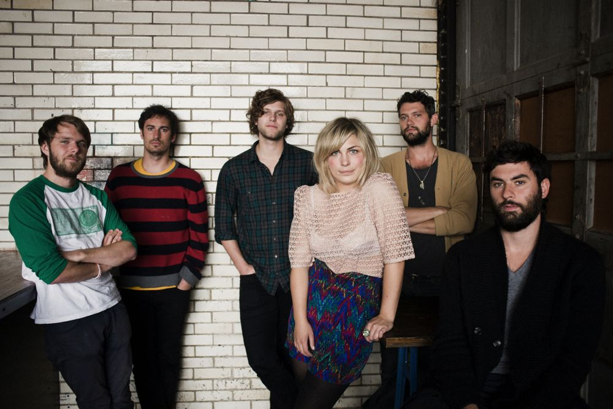

The Head And The Heart es una aclamada banda de folk indie cuyas influencias incluyen música americana, country-rock y pop clásico. La banda fue formada en Seattle por inmigrantes del noroeste en el verano de 2009: Josiah Johnson y Jonathan Russell. La banda también incluye a Charity Rose Thielen, Chris Zasche, Kenny Hensley y Tyler Williams.
Los álbumes de la Banda son: The Head and the Heart, Let's be still, Signs of Light, Living Mirage y Every Shade of Blue